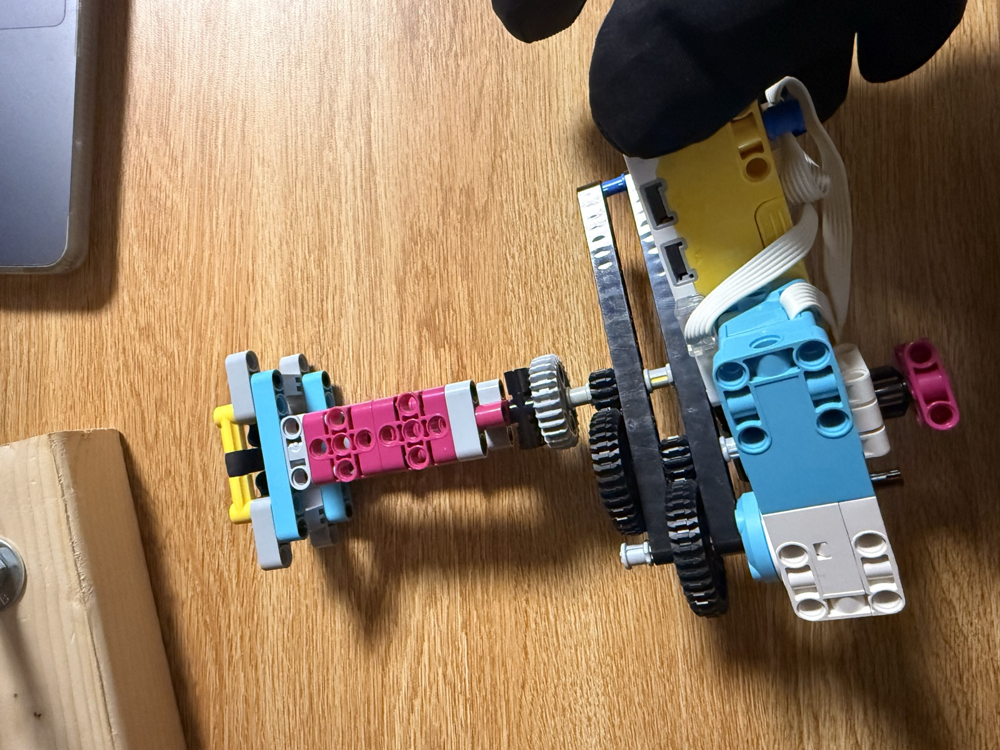
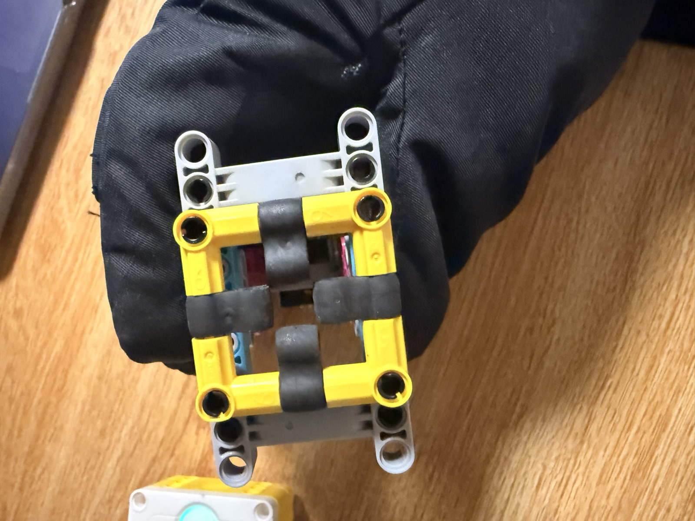
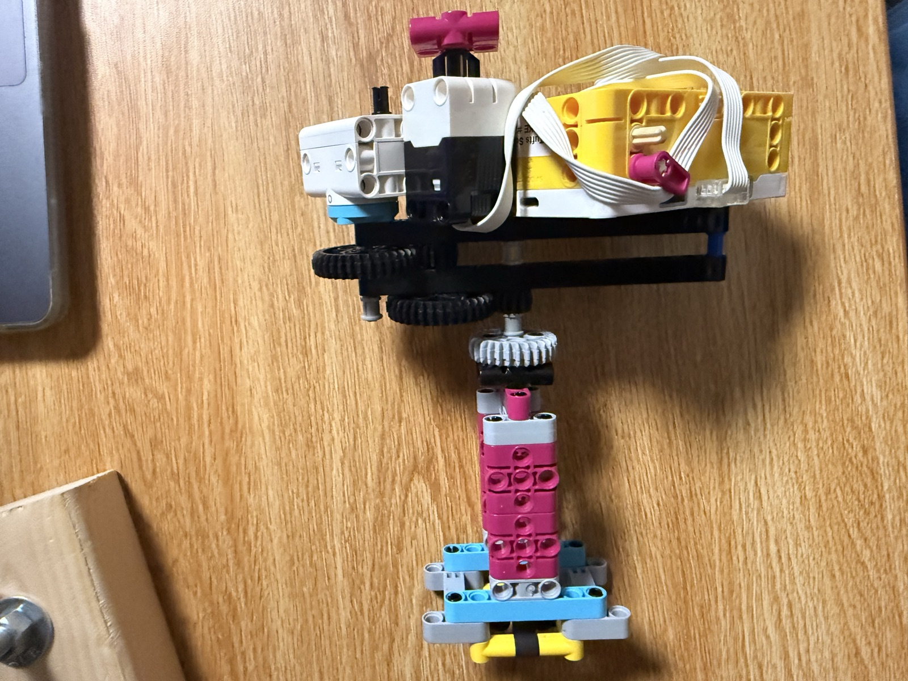

04 M — Sheet 12 / 12
Create a tool for helping an astronaut perform a task during an EVA.

The assignment was to build a tool for an astronaut on a spacewalk. The job it has to do: unscrew a nut from one bolt, carry it over to another bolt, and screw it back on, without ever letting go of the nut, because in zero-G a loose nut floats away. And it has to work with space gloves on, one-handed, with either hand.

The answer is in the head. It's a square socket lined with rubber pieces on the inside, so pushing it over the nut grips it. The nut turns with the socket and can't slip out, whichever way the tool is pointing.
The hub is the body and the handle. A motor spins the socket through a gear train that runs up the neck, so one gloved hand can hold the tool and do the whole job.
The controls had to survive the gloves too, so there's nothing small to find or aim for. The trigger is the force sensor, used as one big press-and-hold switch: hold it and the socket spins at full speed, let go and it stops. And every release flips the direction, so the sequence is press to unscrew, carry the nut over, press again and it screws back on.

The gloves in the photos are part of the assignment: everything gets tested in bulky winter gloves to simulate the real ones.
Testing went well. Unscrewing worked in every orientation, and the runs were consistent from one to the next.
# Setup: Medium motor on port A, Force Sensor on port D.
from hub import port
import runloop
import motor
import force_sensor
# Maximum speed for a Medium motor, in degrees per second.
SPEED = 1110
# Minimum force needed to count as a press, in decinewtons.
PRESS_FORCE = 5
async def main():
# The first press unscrews. Change -1 to 1 if it turns the wrong way.
direction = -1
# Keep running until you stop the program in the SPIKE App.
while True:
# Wait for force on the sensor.
while force_sensor.force(port.D) < PRESS_FORCE:
await runloop.sleep_ms(10)
# Start the motor once for this press.
motor.run(port.A, direction * SPEED)
# Keep running while force is applied.
while force_sensor.force(port.D) >= PRESS_FORCE:
await runloop.sleep_ms(10)
# Stop when released, then reverse for the next press.
motor.stop(port.A)
direction = -direction
runloop.run(main())